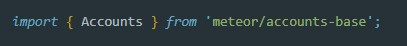
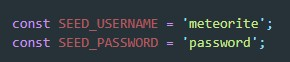
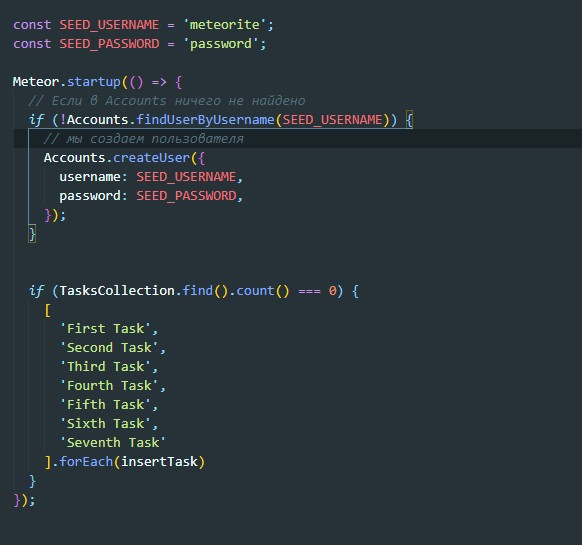
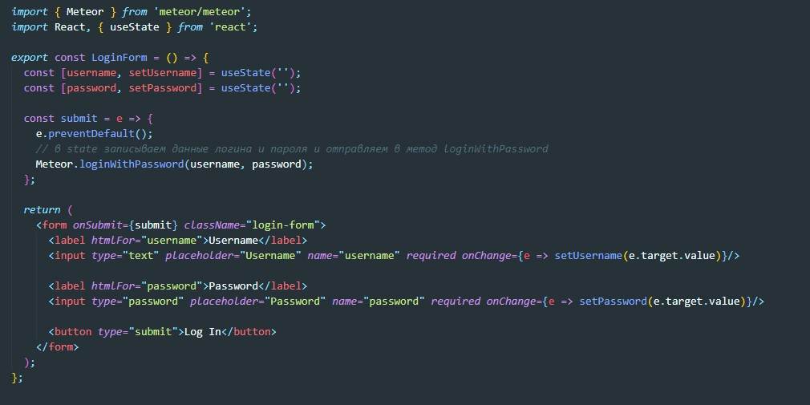
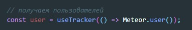
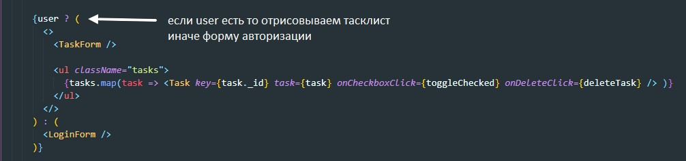
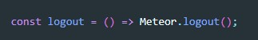
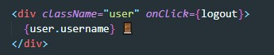

Meteor уже поставляется с базовой системой аутентификации и управления учетными записями из коробки, поэтому вам нужно только добавить пароль учетной записи, чтобы включить аутентификацию по имени пользователя и паролю:
meteor add accounts-passwordМы также рекомендуем вам установить модуль узла bcrypt, иначе вы увидите предупреждение о том, что вы используете его реализацию на чистом Javascript.
meteor npm install --save bcryptТеперь вы можете создать пользователя по умолчанию для нашего приложения, мы собираемся использовать meteorite в качестве имени пользователя, мы просто создаем нового пользователя при запуске сервера, если мы не нашли его в базе данных.
Первое что нужно сделать в server / main.js это добавить еще один импорт
Вот как будет выглядеть наш пользователь по умолчанию:
Теперь методу Meteor.startup мы можем добавить еще одно условие
Создаем обыкновенный компонент с формой
Наше приложение должно разрешать доступ к функциям управления задачами только аутентифицированному пользователю.
Мы можем выполнить это, возвращая компонент LoginForm, когда у нас нет аутентифицированного пользователя, в противном случае мы возвращаем форму, фильтр и компонент списка.
Сначала обернем 3 компонента (форма, фильтр и список) в Fragment. Фрагмент - это специальный компонент в React, который можно использовать для группировки компонентов вместе, не влияя на окончательный DOM.
Таким образом, вы можете получить своего аутентифицированного пользователя или null из Meteor.user (), вы должны заключить его в ловушку useTracker, чтобы он стал реактивным. Затем вы можете вернуть фрагмент с задачами и всем остальным или LoginForm в зависимости от присутствия пользователя в сеансе или его отсутствия.
 Мы также можем добавить обработчик onClick для выхода пользователя из системы. Это очень просто, просто вызовите для него Meteor.logout ().
Принцип там простой, из LocalStorage просто удалится id токена. Полученную функцию вызываем по клику кнопки выхода
